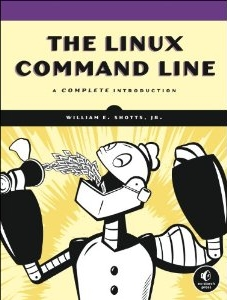
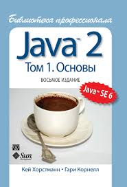
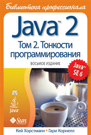

Одни из них я честно купил (а в случае с бесплатными книгами - скачал с официального сайта), с другими знакомился в электронном виде. Ну вы знаете, эти сканированные страницы. А иногда даже фанатские издания вроде "C++ глазами хакера". Да, это был chm-файл с главами и прочими атрибутами 2000-х. Для каждой упомянутой здесь книги приведен комментарий, почему она показалась мне интересной. Некоторые книги я читал в бумажном виде, некоторые в электронном. Для книг, прочтенных на русском языке и комментарии на русском. Для англоязычных изданий - на английском.
I also included actual publication date of each book I had read. Many of the books has been updated and re-published since that time. But I would like to preserve information of actual dates just for historical reasons. If you are interested in the most newest versions of the book just google for it.
В таблице представлена обложка для каждой книги. Причем именно обложка того издания, которое я читал. Кроме того, обложки кликабельны: гиперссылка ведет на официальный сайт книги. Если официального сайта нет, либо же он был, но исчез, либо я просто не нашел его на просторах Интернета, вы перейдете в Интернет-магазин, где книгу можно купить (и где я скорее всего ее купил - но всего не упомнишь, да и не так уж это важно).
| Обложка | Название | Автор(ы) | Год издания | Комментарии |
|---|---|---|---|---|
|
| Computer Viruses, Artificial Life And Evolution: What Computer Viruses Can Teach Us About Life | Mark A. Ludwig | 1993 | Almost all school and university courses doesn't tell about the evolution from mathematical perspective. But this book does. |
|  | The Linux Command Line | William Shotts | 2013 | This book reveals the mystery about the terminal. And imparts the loving of CLI even for experienced users. |
|
| Think Python | Allen B. Downey | 2015 | This book is very good in case if you would like to recall the university Computer Science course. As for me, the book brought a lot of memoirs from the beginning of my way in programming. |
|   | Core Java | Кей С. Хорстманн, Гари Корнелл | 2011 | Тут будет описание полностью на русском языке Perhaps, this is the most practical book about Java. There are not buzzwords, patterns, etc in the book. Only real-life knowledge: how to read from a file, how to program using generics and so on, how to use sockets. The book is fulfilled by lots of examples. After reading this book you will not be lost in tons of Java publications on Internet. Что касается именно восмього издания, да, оно устарело. Но от это книга становится не теряет ценности. Ведь толковое описание legacy-технологий не всегда можно найти в современном Интернете (несмотря на расхожее мнение, мол, что попало в Интернет, остается там навеки, по-настоящему полезная информация живет в Сети относительно недолго). Ну там всякие DOCTYPE, локали, JNI и Swing. |
| Защита от вторжений. Расследование компьютерных преступлений | Кевин Мандиа, Крис Просис | 2005 | тут будет описание на русском языке This book will be helpful not only for IT Security professionals. The book exposes a very accurate and detailed approach to logging and network supervision. That helped me a lot when I was on "Jenkins Duty". |